卡吕普索
01游戏概览
卡吕普索是一款板块放置生存游戏。玩家从威力巨大的海洋漩涡里捞起残料，用它们在水面上搭起漂浮的聚落：从木板碎片到锈蚀金属，再到海藻，每一块回收来的东西都能拿去盖建筑。建筑会提供独特能力、触发奖励效果，也用来安置以你聚落为家的幸存者。
整局游戏进行 4 轮，可以竞争、合作或单人游玩。
先选模式
开始之前先决定这一局怎么玩：竞争（与其他玩家对抗）、合作（组队）或单人。大部分规则三种模式通用；凡有差异之处，本规则用彩色框与图标标出：
第一次玩《卡吕普索》，建议先玩竞争模式——合作模式会难一些。
阅读时只需盯住与你所选模式对应的规则，其余可以跳过；等你想换一种玩法时，回到这些彩色区块看设置与玩法上的差别即可。本规则书最后一节还有一份浓缩版的差异速查。
竞争模式的目标
在一个漂散的世界里，只有一座聚落能高出其余。
每位玩家的目标是用自己收集的残料搭出最好的聚落。游戏结束时分数最高的玩家，就是建成了最成功聚落的人，赢得游戏。
合作（与单人）模式的目标
当世界漂散开来，生存意味着站在一起。
你们的共同目标是建成一座聚落，让它庇护并养活你的社群、达成聚落目标，并且扛住天气事件。
所有玩家同胜同负。撑过最后一轮、让聚落活下来，就赢得游戏；一旦失败，浪头会把你们整个吞掉。
02配件
| # | 配件 | 数量 | 说明 |
|---|---|---|---|
| 1 | 打捞袋 | 1 个 | 灰色袋 |
| 2 | 鱼袋 | 1 个 | 蓝色袋 |
| 3 | 废料袋 | 1 个 | 绿色袋 |
| 4 | 打捞板块 | 120 块 | T 形板块 |
| 5 | 鱼标记 | 60 枚 | 圆形标记，背面印分值 |
| 6 | 废料板块 | 60 块 | 1×2 长方形板块 |
| 7 | 漩涡板 | 4 块 | 双面，标「1/3」「2/4」 |
| 8 | 海域板 | 4 块 | 双面 |
| 9 | 纪念碑板块 | 15 块 | 背面是圣所 |
| 10 | 速查卡 | 4 张 | 每位玩家 1 张 |
| 11 | 「橡胶」建筑板块 | 36 块 | 双面，同底色两种建筑 |
| 12 | 「金属」建筑板块 | 32 块 | 同上 |
| 13 | 「木材」建筑板块 | 32 块 | 同上 |
| 14 | 「海藻」建筑板块 | 32 块 | 同上 |
| 15 | 救生圈标记 | 32 枚 | 标记漂流中的幸存者 |
| 16 | 聚落目标卡 | 10 张 | 分 A、B 两组 |
| 17 | 幸存者模型 | 48 个 | |
| 18 | 船板块 | 36 块 | |
| 19 | 园圃／渔网板块 | 48 块 | 双面 |
| 20 | 木桶标记 | 40 枚 | 一面半沉、一面满桶 |
| 21 | 预报卡 | 28 张 | 4 套各 7 张，按玩家颜色区分 |
| 22 | 建筑对照板／资源记录板 | 1 块 | 正面资源记录板，背面建筑对照 |
| 23 | 计分纸 | 1 本 | 竞争模式用 |
| 24 | 记录方块 | 5＋1 个 | 5 个小的资源方块，1 个大的轮次方块 |
| 25 | 来援幸存者卡 | 1 张 | 标四种难度 |
| 0 | 固着连接板 | 1 块 | 合作／单人模式拼成中央岛屿 |
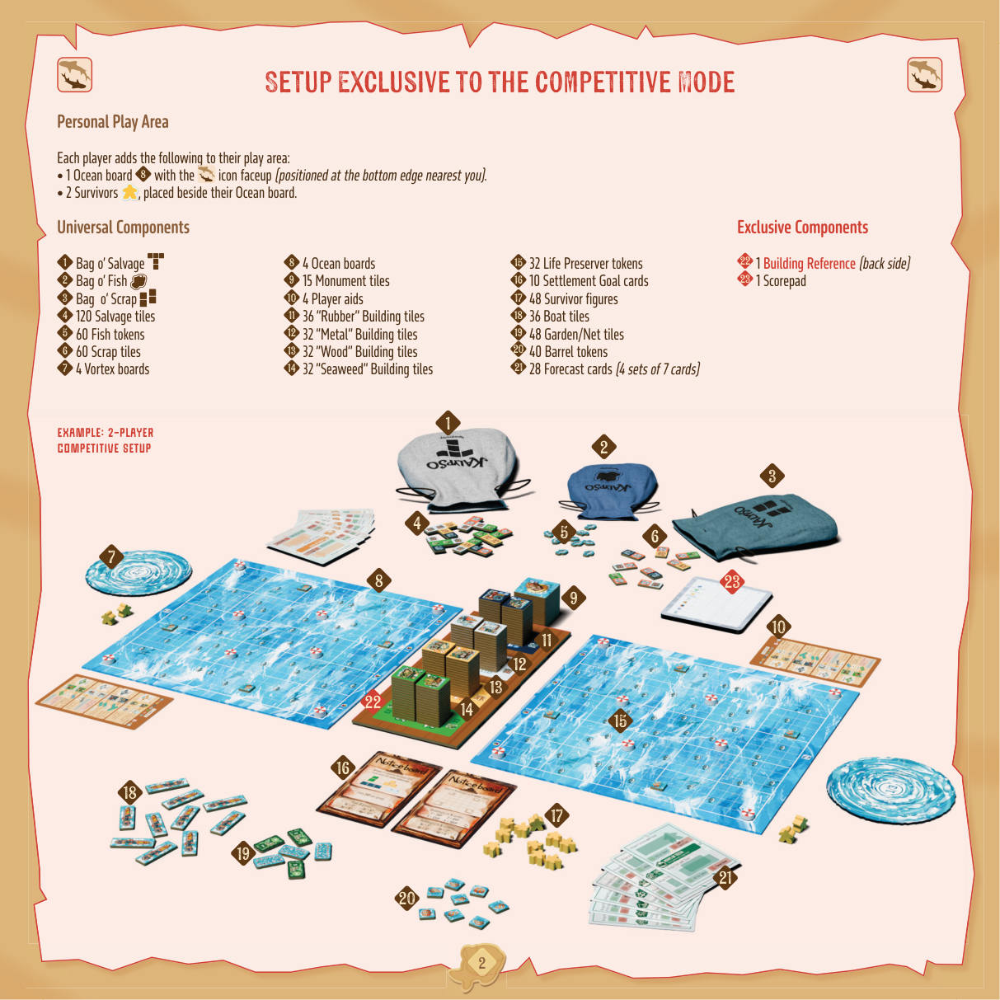
03设置
1. 整理中央区域（三种模式通用）
在所有人伸手可及的中央区域里：
- 把所有双面板块按种类分堆：
- 所有建筑——按底色分成 4 堆（橡胶、金属、木材、海藻）；
- 所有园圃／渔网；
- 所有纪念碑。
- 为下列配件各设一个供应堆：所有船、所有幸存者、所有救生圈、所有木桶（任一面朝上）。
- 把下列配件分别装进对应的抽取袋：所有打捞板块（T 形）进灰色打捞袋、所有鱼进蓝色鱼袋、所有废料（1×2 长方形）进绿色废料袋。
2. 准备个人游玩区
每位玩家拿取以下配件，组成自己的游玩区：
- 1 块漩涡板，翻到「1/3」那一面朝上；
- 1 张速查卡；
- 1 套 7 张预报卡（这是唯一按玩家颜色区分的配件，用途只是确保每人手上的预报卡是完整一套）。
3. 拼出海洋
每人把自己那块海域板摆在自己面前，图标面朝上，并且让底边靠近自己。再拿 2 个幸存者放在海域板旁边。然后各自完成以下步骤（可以同时进行）：
- 从供应堆拿 4 个木桶，半沉面朝上放在板上对应的图标上；
- 从供应堆拿 8 个救生圈，放在板上对应的图标上；
- 从打捞袋抽 2 块打捞板块，选 1 块留下，以任意朝向放在能碰到或压住自己海域板中央白圈的位置上；没用到的那块放回打捞袋。
把固着连接板放在共用游玩区正中（它会被压在拼好的海域板下面，看不见）。然后无论几人，都把4 块海域板以图标面朝上叠放在连接板上，拼成下图所示的岛。
- 从供应堆拿 16 个木桶，半沉面朝上放在对应的图标上；
- 从供应堆拿 16 个救生圈，放在对应的图标上；
- 每人从打捞袋抽 2 块打捞板块，选 1 块留下，按下列初始条件放置：不得压住岛屿或其他打捞板块；必须正交相邻于岛屿的至少一条不同的边——也就是说，两位玩家不能从同一侧起步。没用到的那块放回打捞袋。
设置完成后，把供应堆里剩下的救生圈全部收回盒中，本局不再使用。
4. 亮出聚落目标
5. 设定难度并上任管家（仅合作／单人）
- 选难度：全组商量选一个难度（学习／简单／中等／困难），把来援幸存者卡塞进海域板下方、只露出所选难度那一行，让所有人看得见。然后按卡上「第 1 轮」那一列的数字，从供应堆取出相应数量的幸存者放到岛屿上。
- 推举管家：全组推举一位玩家担任聚落的管家，负责记录当前轮次以及鱼、社群、园圃、太阳能板、船五项数值。管家拿过资源记录板，把大记录方块放在顶部「1」格表示轮次；再拿 1 个小方块放在岛上社群成员数对应的数字格上；其余 4 个小方块放在各轨道「0」格。
- 管家同时负责预报天气：把自己的 7 张预报卡洗混，图案面朝上叠成一叠，放在资源记录板旁，称为预报牌堆。
本页示例：4 人局、难度「学习」，第 1 轮在岛上放 3 个幸存者。
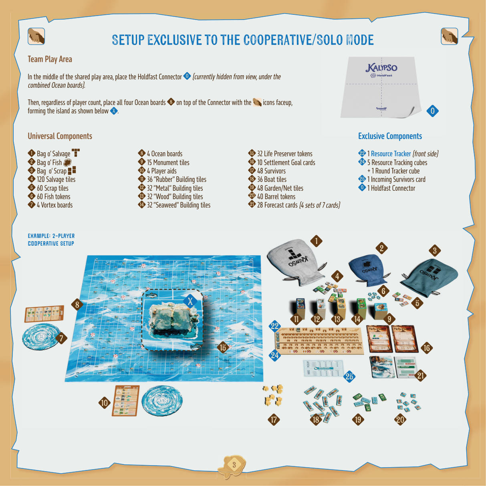
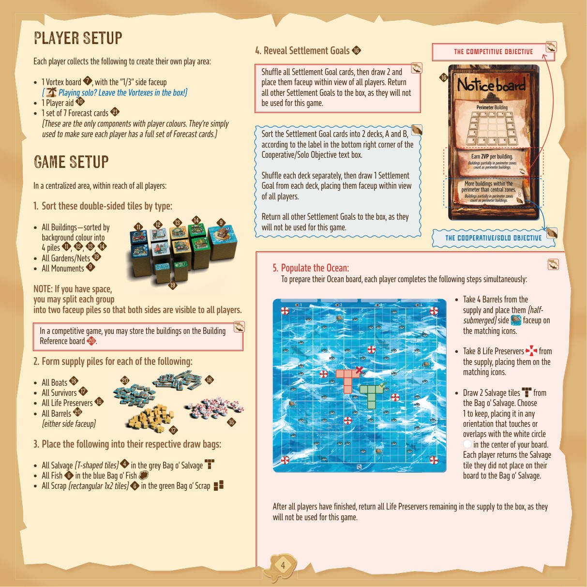
04核心概念
在开始搭建之前，先弄清几个关键概念。游戏主体发生在这片海洋上：浪里漂着抓住一线希望的幸存者，也漂着等待被再利用的半沉木桶。这些在设置时就已经摆好，随着你的地基扩张，它们会陆续变成你的资源。
海域板与「区域」
海域板上有一层网格。网格由若干区域构成：每 4×4 个方格为一个区域，边界用粗白线标出。每个区域内可能有鱼、救生圈和／或半沉木桶的组合。
规则里凡称「区域」，指的就是这种 4×4 的方块区。区域由一个个方格组成，方格决定了板块可以放在哪里（见下文「标准放置规则」）。
聚落、地基、建筑
聚落直接建在地基之上，包括建筑、纪念碑和园圃，它们负责支撑并养活你的社群。要在聚落里放一块板块，它下面整片区域必须已经被地基覆盖。
地基是直接铺在海域板上的那一层东西，分两类：你打捞来的，和你生产出来的。你的地基可以由打捞板块、废料、满桶、已靠泊的船任意组合而成。
从幸存者到定居者
游戏中幸存者会不断来你的聚落寻求庇护。按模式不同，他们存放在你的速查卡旁（竞争）或岛屿上（合作／单人）。他们可以被派到预报卡或房屋上，用来满足预报要求（见第 06 节）；也可以被派到某栋建筑上，触发那栋建筑的奖励效果（见第 09 节）。
幸存者一旦被放到某栋建筑上（包括房屋），他就不再是幸存者，而成为定居者。这一点在第 11 节的「回合末职责」里很关键。定居者会一直留在那栋建筑上，直到游戏结束。
标准放置规则
放在海域板上的每一块板块都必须遵守以下通用规则：
- 板块之间不得互相重叠，也不得压住中央岛屿。
- 板块必须至少有一部分落在海域板的网格之内。
- 放置前你可以先比划试摆，但一旦放下，就不能再移动。
- 所有板块与配件都必须在获得它的同一回合内放下。漩涡不能跳过不选，本轮获得的板块／配件没放完，本轮不能结束。
05流程总览
整局 4 轮。每一轮所有玩家同时进行，并分为 4 个阶段：
| 阶段 | 内容 | 细分 |
|---|---|---|
| 阶段一 | 为今日做准备 | i 判定预报 → ii 评估预报 → iii 获得奖励 → iv 承受惩罚 |
| 阶段二 | 补充漩涡 | 漩涡板翻面、各补 5 块打捞板块 |
| 阶段三 | 扩张你的聚落 | A 选打捞物 → B 放置打捞物 → C 评估并结算奖励 → D 传递漩涡 |
| 阶段四 | 执行回合末职责 | i 面对预报 → ii 检查生存要求 → iii 重置漩涡 |
第 4 轮结束后：竞争模式分数最高者获胜；合作／单人模式若你们活了下来、并且达成了两张聚落目标，就一起获胜。
06阶段一：为今日做准备
每一天都带来新的挑战。就像潮水会转向，头顶的天也说变就变。看看预报，弄清要发生什么——如果你在轮末之前摆不平这场天气，就要付出代价。
i) 判定预报
每位玩家从自己那套预报卡里选 1 张（用自己玩家颜色的那套），递给相邻的玩家。传递方向看轮次：
- 第 1、3 轮：逆时针传；
- 第 2、4 轮：顺时针传。
（这个方向永远与漩涡板上印的箭头相反。）
所有人都收到卡之后，同时翻开。每人把收到的卡沿自己海域板的上边缘塞到板下，只露出预报标题与图标那一部分。海域板上方印有提示与图标，告诉你这些预报卡该从左到右依次塞在哪个位置。
管家从预报牌堆顶抽 1 张预报卡，正面朝上翻开。其余玩家从自己那套卡里找出同一张。然后所有人（包括管家）把这张预报沿自己海域板靠近自己的一侧塞到板下，只露出标题与图标那一部分。
塞卡时记得往右边留出空位，后面几轮还会有新的预报要塞进来。
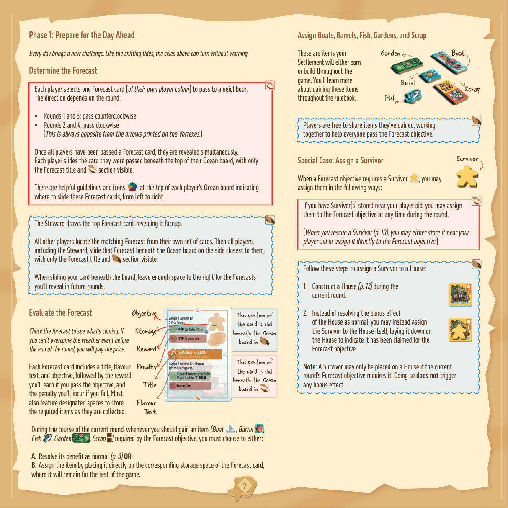
ii) 评估预报
每张预报卡包含：标题、风味文本、目标，接着是达成目标后能拿到的奖励，以及失败时要吃的惩罚。多数卡上还有专门的储存格，用来摆放你陆续收集到的目标所需物品。
在本轮进行中，每当你应当获得预报目标所需的某件物品（船、木桶、鱼、园圃、废料）时，你必须二选一：
- A. 照常结算它的收益（见本节 iii）；或
- B. 把它分配出去——直接放到预报卡上对应的储存格，此后它就一直留在那里，直到游戏结束。
特例：把幸存者分配到房屋
当预报目标要求一名幸存者时，你可以这样分配：
- 在本轮内建一栋房屋；
- 放弃房屋本身奖励效果的正常结算，改为把这名幸存者直接放到房屋上——把他躺下摆放，表示他已被本轮的预报目标占用。
注意：只有当本轮预报目标确实需要时，才能把幸存者放到房屋上；这样做不会触发房屋的任何奖励效果。
如果你的幸存者存在速查卡旁，你可以在本轮任意时刻把他分配给预报目标。（救起一名幸存者时，你可以选择把他存在速查卡旁，也可以直接分配给预报目标。）
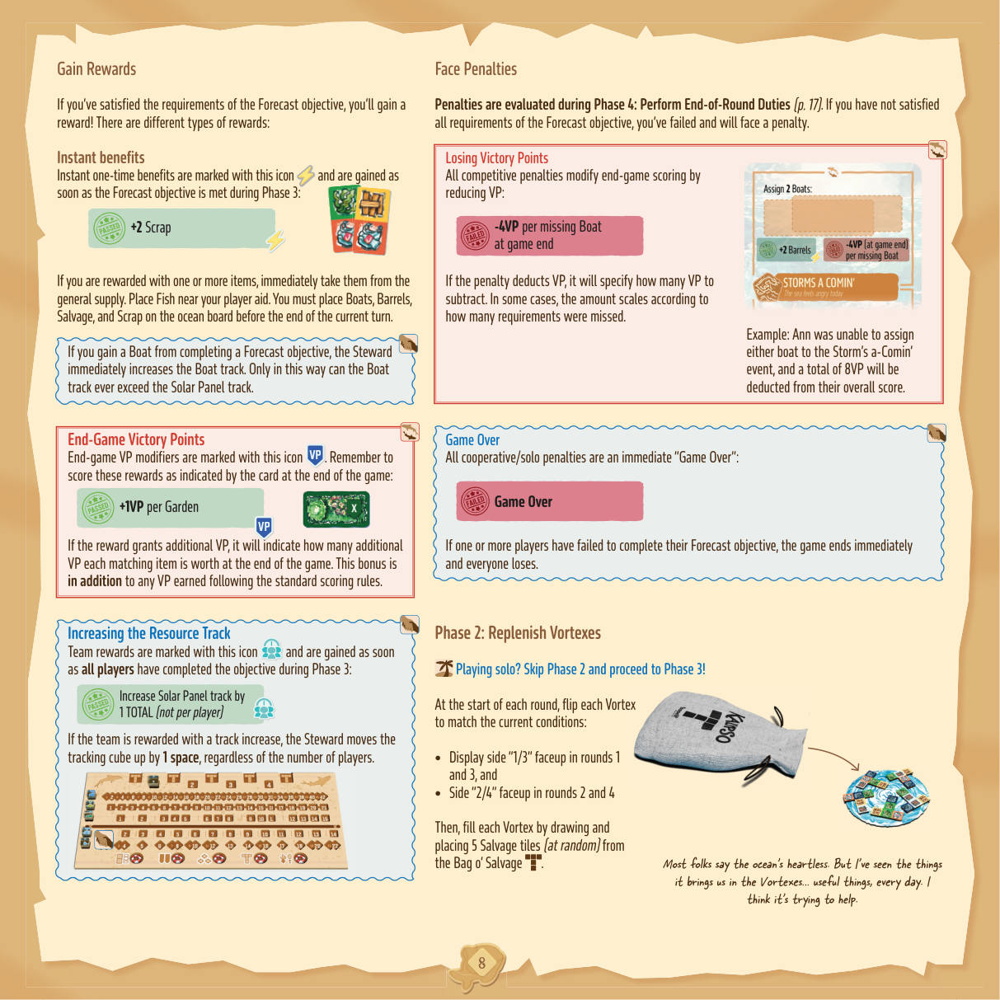
iii) 获得奖励
如果你已经满足了预报目标的全部要求，就能拿到奖励。奖励分几类：
| 类型 | 说明 |
|---|---|
| 即时一次性收益 | 卡上标有专用图标。在阶段三刚一满足目标就立刻获得。 |
| 终局胜利点修正 | 卡上标有 VP 图标。游戏结束时按卡面说明计分；这类加成是在常规计分之外额外加上的。 |
| 团队奖励 | 卡上标有团队图标，所有玩家都完成本轮目标后获得。 |
| 获得物品 | 立刻从公共供应堆拿取。鱼放在速查卡旁；船、木桶、打捞物、废料必须在本回合结束前放到海域板上。 |
- 团队若获得轨道提升奖励，管家把对应轨道上的记录方块往上移 1 格——不论几人，只升 1 格。
- 若因完成预报目标而获得 1 艘船，管家立刻把船轨道升 1 格。这是唯一能让船轨道超过太阳能板轨道的途径。
iv) 承受惩罚
惩罚在阶段四才评估。如果你没能满足预报目标的全部要求，就算失败，要按所选模式吃惩罚：
07阶段二：补充漩涡
每轮开始时，把每块漩涡板翻到与当前轮次相符的那一面：
- 第 1、3 轮：「1/3」面朝上；
- 第 2、4 轮：「2/4」面朝上。
然后给每块漩涡板补充：从打捞袋随机抽 5 块打捞板块，放在漩涡板上。
08阶段三：扩张你的聚落
这是游戏的核心：你的聚落在这里成形。本阶段玩家抓取打捞板块并策略性地摆放，凑出同种材料的成组结构，用来盖建筑或纪念碑。
本阶段分四步，按顺序进行：
- A 选打捞物（本节）
- B 放置打捞物
- C 评估并结算奖励
- D 传递漩涡
A) 选打捞物
所有玩家同时从自己的漩涡板上选 1 块打捞板块。
- 每块打捞板块都恰好由 5 个图标组成：其中 2–5 个是建材，0–3 个是塑料。
- 打捞板块双面，两面图标分布完全相同，只是背面把「T」形顶部左右两个图标的位置对调。
四种建材
| 材料 | 特性 | 对应建筑 |
|---|---|---|
| 木材 | 用途最广，最适合搭结构 | 房屋、箍桶坊 |
| 金属 | 坚固又可塑 | 太阳能板、船坞 |
| 橡胶 | 柔韧，不可或缺 | 仓库、废料场 |
| 海藻 | 天然绝缘材料，产量丰富 | 织网坊、温室 |
- 单人不选漩涡上的板块，改为从打捞袋抽 2 块，选 1 块留下，另一块放到资源记录板上最左上角的凹位。记录板上的打捞板块用来记你本轮已经行动了几次。
- 单人模式每轮共选 5 块打捞板块；多人合作时每人选 4 块。
B) 放置打捞物
选好之后，把板块放到海域板上，扩张你的地基。尽量把同种材料凑在一起，好在 C 步盖建筑和纪念碑。除标准放置规则外，还适用以下几条：
- 每块新打捞板块都必须正交相邻（边挨边）于你地基的至少一部分。
- 不许对角放置（角挨角）。
- 可以故意把板块放在盖住半沉木桶或救生圈的位置上。
你的地基怎么算
随着游戏推进，你的地基会不断扩张：凡是与你地基正交相连的板块都算地基，但半沉木桶、救生圈、渔网不算。
救出幸存者
救生圈标记着漂流中的幸存者。当你从板上拿走一个救生圈时，把它放到一边，本局此后不再使用，并立刻从公共供应堆救起 1 名幸存者，把他放到：
- 你的速查卡旁（竞争模式）；终局计分时每名幸存者给你 2 VP；
- 岛屿上（合作／单人模式）。幸存者一旦被放上岛屿，管家立刻把资源记录板的社群轨道升 1 格。以这种方式救起的前 5 名幸存者，会解锁专才能力（见第 13 节）。
获得木桶
整局游戏中，你有 4 种途径获得满桶：
- 放置打捞板块、废料、船或木桶时，盖住了海域板上的半沉木桶；
- 建成箍桶坊并结算它的奖励效果（产出一个木桶）；
- 通过某些预报目标，把木桶作为奖励拿到；
- 从鱼袋里抽到印有满桶图标的鱼。
拿到木桶后，必须在本回合结束前把它放到海域板上——满桶面朝上，正交相邻于你的地基。从这一刻起，这个木桶就是地基的一部分。
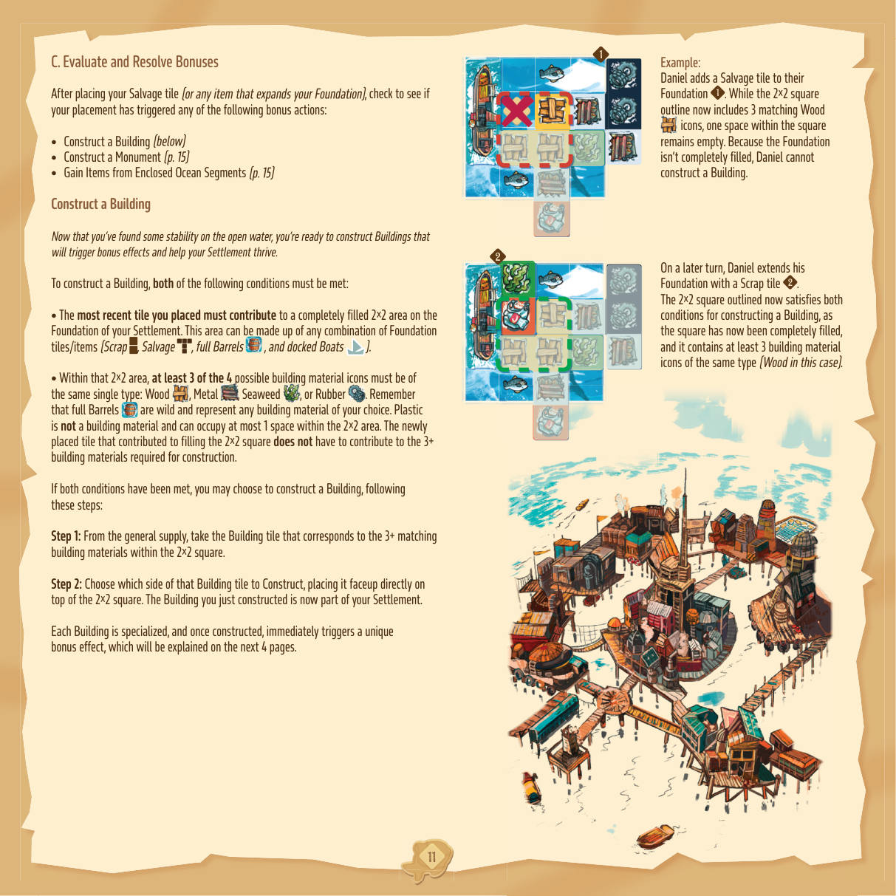
C) 评估并结算奖励
放好打捞板块（或任何扩张地基的配件）之后，检查这次放置是否触发了下列奖励行动：
- 建造建筑；
- 建造纪念碑（见第 10 节）；
- 从被围合的海域中获取物品（见第 10 节）。
建造建筑
必须同时满足以下两个条件才能建：
- 你最近放下的那块板块，参与构成了一块完全填满的 2×2 区域（地基上）。这块 2×2 可以由任何地基板块／配件组成：废料、打捞物、满桶、已靠泊的船。
- 这块 2×2 里，4 格里至少 3 格的建材图标是同一种：木材、金属、海藻或橡胶。记住满桶是万能，可以代表你指定的任意一种建材；塑料不是建材，在 2×2 里最多只能占 1 格。
刚放下去、凑齐 2×2 的那块板块，不必是提供那 3 个以上建材的板块。
两个条件都满足后，你可以选择建造，步骤是：
- 从公共供应堆取与 2×2 里那 3 个以上同种建材相对应的建筑板块；
- 选一面建造，正面朝上直接压在 2×2 上。建成的建筑即成为你聚落的一部分。
每栋建筑都是专精的，建成后立刻触发它独有的奖励效果（见第 09 节）。
C 步还有另外两种奖励：建造纪念碑与从被围合的海域中获取物品，见第 10 节；阶段三的 D 步（传递漩涡）也放在第 10 节末尾，因为它必须等所有人做完 A–C 才能一起结算。
09建筑一览
每块建筑板块双面，两面各印一栋建筑，底色与所需建材相同。所以每种建材对应两栋建筑，建的时候选一面放上去。板块右上角的数字（或 X）就是这栋建筑的终局 VP；这个数字不影响游戏过程。
| 建筑 | 材料 | VP | 效果 |
|---|---|---|---|
| 房屋 | 木材 | 1 | 让 1 名幸存者有地方住，并把他派去工作（见下） |
| 箍桶坊 | 木材 | 3 | 产 1 个满桶（万能建材） |
| 太阳能板 | 金属 | X | X＝与它正交相邻的可见海域格数（上限 7）；同时太阳能板轨道升 1 |
| 船坞 | 金属 | 1 | 下水 1 艘船（需太阳能板轨道高于船轨道） |
| 废料场 | 橡胶 | 3 | 抽 2 块废料板块，逐块放到聚落旁 |
| 仓库 | 橡胶 | 1 | 抽 1 块打捞板块，放到聚落旁 |
| 织网坊 | 海藻 | 2 | 撒 1 张网，在同一区域内捕鱼 |
| 温室 | 海藻 | 2 | 建 1 座园圃 |
表里的「材料」指该建筑板块底色所对应的建材；实际建造判定仍是「2×2 里至少 3 格同种建材，满桶可顶」，具体以板块图示为准。
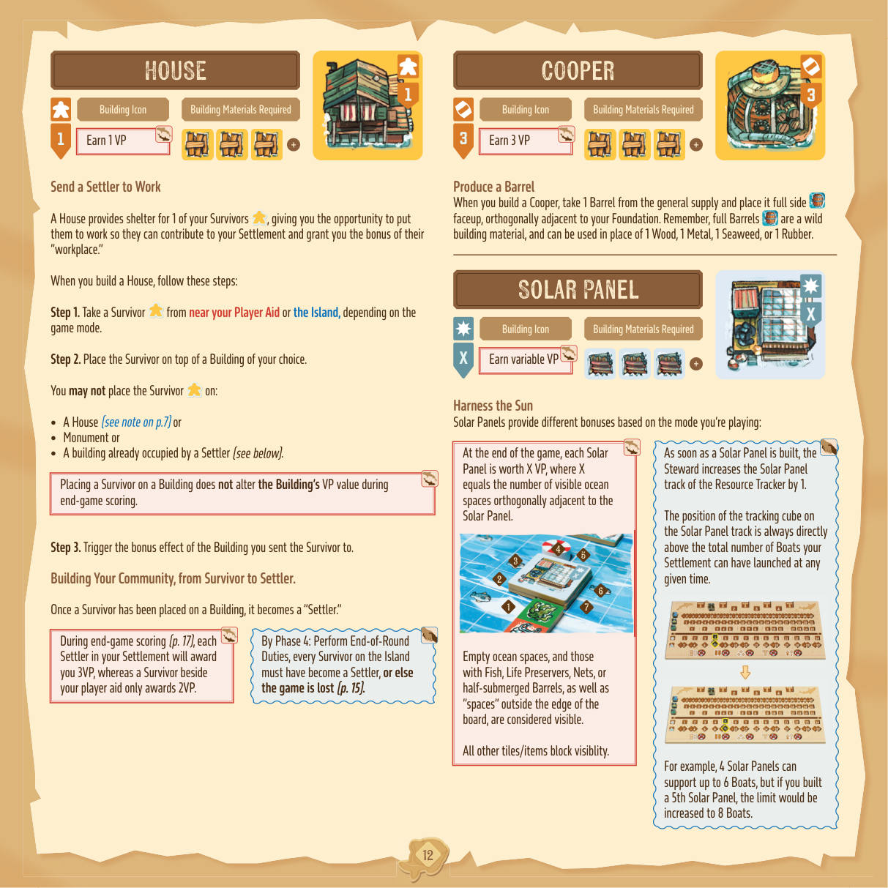
房屋：把定居者派去工作
房屋为 1 名幸存者提供庇护，让你能把他派上用场——去为聚落出力，并让你拿到他那处「工作场所」的奖励。建造房屋时按以下步骤：
- 按模式从速查卡旁或岛屿上取 1 名幸存者；
- 把这名幸存者放到任意一栋建筑上；
- 触发那栋建筑的奖励效果。
你不能把幸存者放到：另一栋房屋上、纪念碑上、或者已经有定居者的建筑上。
箍桶坊：产一个木桶
建成箍桶坊时，从公共供应堆取 1 个木桶，满桶面朝上放在与地基正交相邻的位置。记住：满桶是万能建材，可顶 1 木材、1 金属、1 海藻或 1 橡胶。
太阳能板：驾驭阳光
太阳能板的效果按模式不同：
- 终局计分：每块太阳能板价值 X VP，X＝与它正交相邻的可见海域格数（每块上限 7 VP）。
- 船只上限：太阳能板一建成，管家立刻把资源记录板的太阳能板轨道升 1 格。太阳能板轨道上记录方块的位置，永远对应太阳能板正下方船只轨道上「你的聚落同时最多能有几艘船下水」。
船坞：下水一艘船
船能解锁海上的潜力：让你在新水域捕鱼、收集木桶、救起幸存者，或者「靠泊」来扩张地基。
建成船坞时下水 1 艘船：从公共供应堆取 1 艘，按标准放置规则放到海域板上任意位置。船可以整艘落在同一个区域内，也可以横跨两个相邻区域。
只要一艘船与你地基正交相邻——不管是放下时就挨着，还是之后被别的板块／配件接上——它就算已靠泊，成为你地基的一部分。船一旦靠泊，你扩张地基时就可以把新的打捞物、废料或满桶放在紧挨这艘船的位置。
建船坞之前，全组最好先评估一下：本轮预报目标是否需要船，或者你们是否想通过经海域板下水来获得一艘船。
- 把船分配给预报目标，与太阳能板轨道上记录方块的位置无关，随时可以做。
- 但要下水，必须由管家核对：太阳能板轨道上的方块高于船轨道上的方块。否则不能下水，这艘船退回供应堆。
- 船若分配给预报目标，船轨道不升；船若下水放到海域板上，管家把船轨道升 1 格。
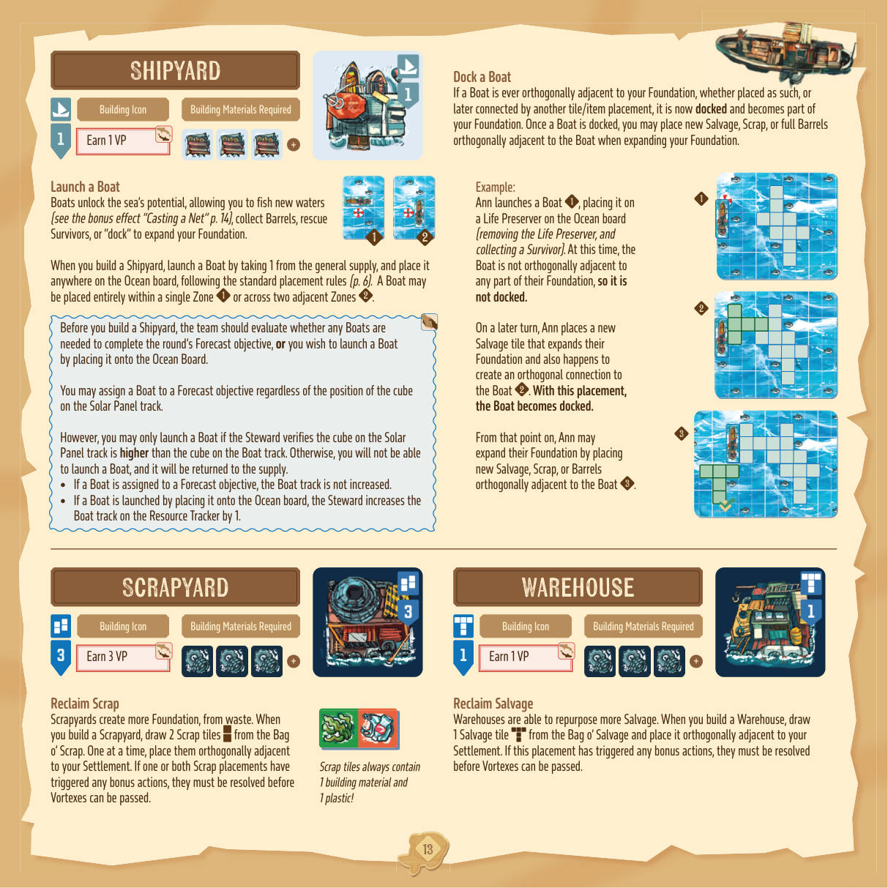
废料场：回收废料
废料场能把废物变成更多地基。建成时从废料袋抽 2 块废料板块，一块一块放到与你聚落正交相邻的位置。若其中一次或两次放置触发了奖励行动，这些奖励必须在传递漩涡之前结算完。
记住：废料板块永远是 1 个建材 ＋ 1 个塑料。
仓库：回收打捞物
仓库能再利用更多打捞物。建成时从打捞袋抽 1 块打捞板块，放到与你聚落正交相邻的位置。若这次放置触发了奖励行动，必须在传递漩涡之前结算完。
织网坊：撒网
建成织网坊时，从供应堆取 1 块园圃／渔网板块，渔网面朝上放在你某一艘船所在的区域内，且整张网必须完全落在同一个区域内——这称为出海捕鱼。（已靠泊的船也可以撒网。）
- 每个区域只能撒 1 张网；
- 一张网只能在一个区域内捕鱼，不能跨两个区域；
- 不能在已被围合的海域段里撒网（见第 10 节）。
渔网的作用是提醒你哪些区域已经捕过。但渔网不是地基，所以永远不能在它上面盖东西；它也不能用来围合海域——放的时候想清楚。
如果没有合法的区域可以下网，这张网就作废，退回供应堆。
出海捕鱼
数一数撒网那个区域里可见的鱼图标有几个，然后从鱼袋抽同样数量的鱼标记，看过之后再处理。
抽到印有木桶图标的鱼：亮出它，从供应堆取 1 个木桶。木桶必须在本回合结束前放下——满桶面朝上、正交相邻于你的地基。
抽到印有数字的鱼，按模式结算：
- 把鱼背面朝上（数字那面朝下）放在速查卡旁，留到终局计分（见第 12 节）。
- 你手上有几条鱼是公开信息，但分值不是。
- 大多数鱼的分值是 1，取值范围 0–3。
- 亮出鱼背面印的数字，管家把鱼轨道升同样格数；
- 这条鱼随即放到一边，本局此后不再使用。
- 鱼是养活社群的关键：阶段四的回合末职责里，每名定居者要吃 2 条鱼，喂不饱就输。
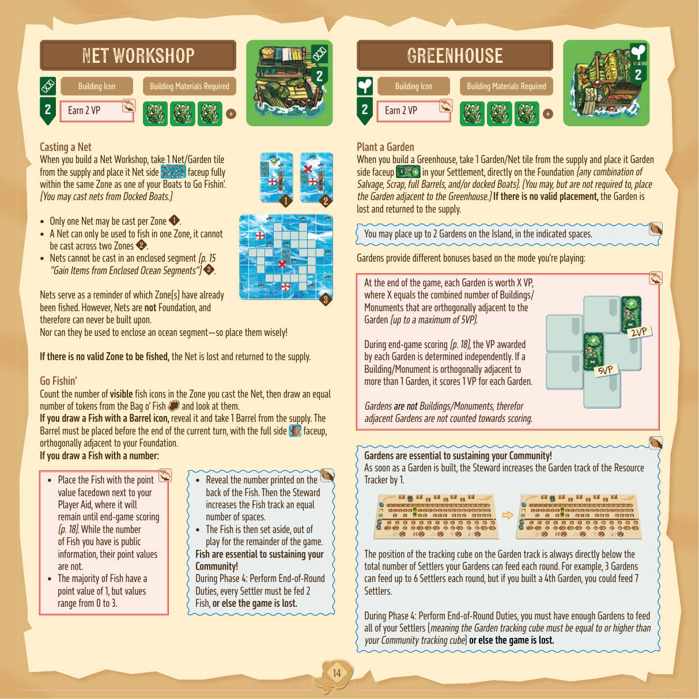
温室：种一座园圃
建成温室时，从供应堆取 1 块园圃／渔网板块，园圃面朝上直接放在你聚落里的地基上（打捞物、废料、满桶、已靠泊的船任意组合均可）。园圃不要求挨着温室，但你可以选择挨着放。如果没有合法位置，这座园圃作废，退回供应堆。
岛屿上最多可以放 2 座园圃，放在标出的格子里。
- 竞争模式：终局时每座园圃价值 X VP，X＝与它正交相邻的建筑／纪念碑数量（每座上限 5 VP）。每座园圃单独结算；若一栋建筑／纪念碑同时挨着多座园圃，则为每座园圃各计 1 VP。园圃本身不算建筑／纪念碑，所以相邻的园圃互不计分。
- 合作／单人模式：园圃是养活社群的关键。园圃一建成，管家立刻把园圃轨道升 1 格。园圃轨道上记录方块的位置，永远对应你的园圃每轮能喂饱的定居者总数。
10纪念碑与围合海域
建造纪念碑
纪念碑的建造方式与建筑相同，但有两点不同：
- 需要一块 3×3 的区域（打捞物、废料、满桶、已靠泊的船）；同样不能盖在渔网上。
- 这块 3×3 里，9 格中至少 5 格的建材图标必须是同一种（木材、金属、海藻或橡胶）；满桶仍是万能。
满足条件后，从公共供应堆取任意一块纪念碑板块，正面朝上直接压在这块 3×3 上。
纪念碑要求更大的地基，而且不提供奖励效果，但它是极好的炫耀资本——终局时每座纪念碑值 11 VP。除场上聚落目标另有规定外，纪念碑对游戏过程没有其他影响；所有纪念碑的效果完全相同，挑一块看着顺眼的就行。
从被围合的海域中获取物品
聚落长大之后，你可以把某些海域围起来，把里面的东西收走。要围合一段海域，你的地基（打捞物、废料、满桶、船）必须把它完全包住，且所有放置规则都必须遵守。
- 区域边界和海域板的板边不算围合——靠边界围出来的缺口不算封闭。
- 对角相邻的板块／标记，只要同时还存在正交连接，就可以参与围合。
被围合的海域里，凡是可见且尚未被取走的半沉木桶、救生圈、鱼，都可以收走：
- 木桶：把木桶标记满桶面朝上放下，扩张你的地基；
- 救生圈：把救生圈退回公共供应堆，并救起 1 名幸存者——按模式放到速查卡旁或岛屿上；
- 鱼：按模式结算（见下）。
已经被你的地基、船或渔网盖住的物品不算「可见」，拿不到。
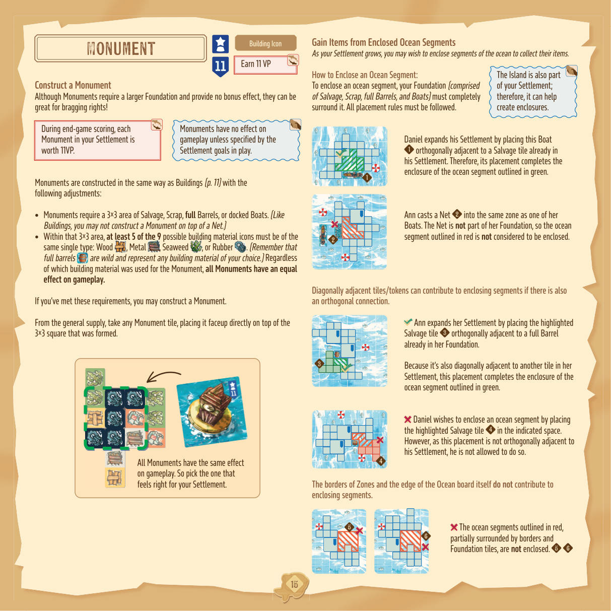
D) 传递漩涡
如果玩家们手上还剩 2 块或更多打捞板块在漩涡板上，并且所有人都已完成 A–C 三步，那么所有人按漩涡板箭头所示方向把自己的漩涡板传给相邻玩家：第 1、3 轮顺时针，第 2、4 轮逆时针。然后回到 A 步「选打捞物」。
否则，把漩涡板上最后剩下的那块打捞板块弃掉（本局不再使用），然后进入阶段四：执行回合末职责。
11阶段四：执行回合末职责
每轮结束时，检查聚落的状况：社群的需求满足了吗？预报目标扛过去了吗？职责必须按以下顺序完成：
i) 面对预报 → ii) 检查生存要求 → iii) 重置漩涡
i) 面对预报（三种模式都做）
- 通过：若你满足了预报目标的全部要求，它的奖励已经在阶段三评估并结算完毕（如适用），直接进入下一步职责——合作／单人去做 ii)，竞争直接跳到 iii)。
- 失败：按所选模式吃惩罚（见第 06 节 iv）。
竞争模式终局计分时按卡面说明扣 VP。然后把这轮预报卡翻到背面朝上，把卡上储存区里的资源放在它上面——表示这轮没通过、分数待扣。然后进入 iii)。合作 / 单人模式只要有一名或多名玩家没完成预报目标，游戏立即失败。
ii) 检查生存要求（仅合作／单人）
- 所有幸存者都必须有住处：若岛上还留有幸存者（也就是说他们还没变成定居者），立即输掉游戏。
- 所有定居者都必须喂饱：聚落里每名定居者，管家就把鱼轨道降 2。如果鱼不够喂饱全部定居者，立即输掉游戏。
- 所有定居者都必须能用到园圃：管家核对资源记录板——若社群轨道上的方块高于园圃轨道上的方块，说明定居者没有足够的生产能力，立即输掉游戏。
喂完定居者后剩下的鱼留到下一轮用。鱼会被定居者吃掉（鱼轨道因此下降），但园圃是永久的，会一轮接一轮持续养活你的社群——园圃轨道的方块永远不会下降。
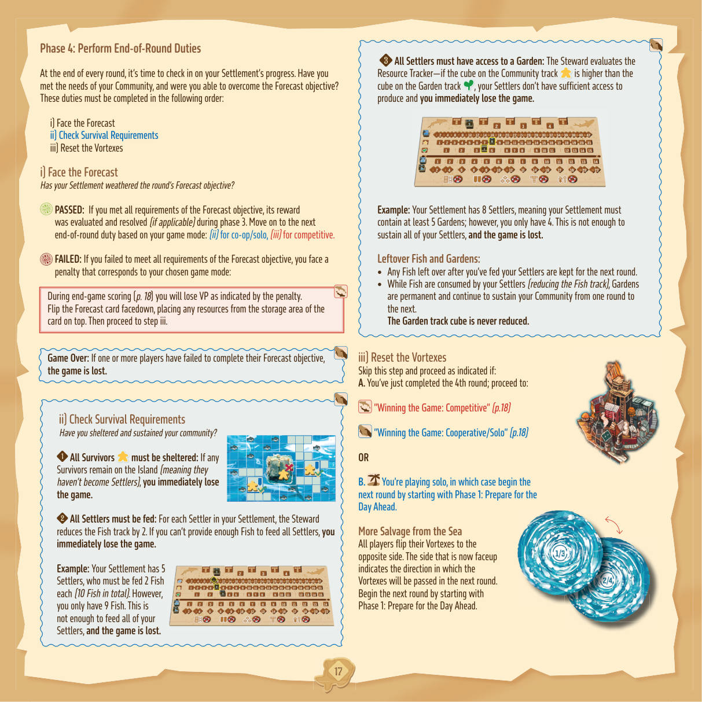
iii) 重置漩涡
所有玩家把漩涡板翻到另一面。现在朝上的那一面，指出了下一轮漩涡要往哪个方向传。然后从阶段一开始下一轮。
跳过整个阶段四的情形：
- 刚刚打完第 4 轮——直接去看第 12 节的终局计分；
- 你在单人游玩——直接开始下一轮，从阶段一重新走。
12终局计分
竞争模式
第 4 轮结束，太阳落山，看看谁建成了最成功的聚落，分数最高者获胜。按以下各项计分：
| 项目 | 计分 |
|---|---|
| 建筑与纪念碑 | 按板块右上角的数字计分 |
| 鱼 | 每围合到 1 条仍可见的鱼 1 VP；再加上速查卡旁所有鱼标记背面数字之和 |
| 园圃 | 每座园圃按正交相邻的建筑／纪念碑数计 1 VP／个，每座上限 5 VP |
| 社群成员 | 建筑上的每名定居者 3 VP；速查卡旁每名幸存者 2 VP |
| 太阳能板 | 每块按正交相邻的可见海域格数计 1 VP／格，每块上限 7 VP。救生圈标记／图标、半沉木桶标记／图标、渔网、鱼图标都不挡视线 |
| 聚落目标 | 场上两张聚落目标各按你的达成程度给分 |
| 预报卡 | 先算正面朝上（通过）那些卡的得分，再把背面朝上（失败）那些卡的扣分算上；在计分纸上记「得分 − 失分」的净值 |
平局
若两人或多人同分，按下列顺序逐条比较，直到分出胜负：
- 地基里可见塑料最少的玩家；
- 定居者 ＋ 幸存者总数最多的玩家；
- 纪念碑最多的玩家；
- 建筑最多的玩家。
万一还是平局（很少见），则共享胜利。
合作／单人模式
在开阔海面上活过四轮已经不容易，但胜利之前还有最后一道关：游戏结束时检查全部聚落目标。只要有一张或更多聚落目标没达成，你们就输了。全部达成，恭喜——你们赢了，做了很多人做不到的事：不只是活下来，而是在这个新水世界里活得兴旺。
| 四轮里每轮都必须做到 | 说明 |
|---|---|
| 完成本轮预报目标 | 包括管家在内，所有玩家都要完成 |
| 庇护每名社群成员 | 所有幸存者都要变成定居者 |
| 喂饱每名社群成员 | 每名定居者 2 条鱼；园圃提供持续的供养 |
终局时还要问一句：两张聚落目标都达成了吗？达成或超额达成即胜，否则即负。
13专才与他们的能力
救起一名幸存者时，他有机会成为专才。先照常把救生圈从海域板上取走。然后从供应堆取一名幸存者放到岛屿上——提醒一句：这名幸存者必须在阶段四之前变成定居者，否则游戏失败。
如果资源记录板底部还有空着的专才格，你刚救起的这名幸存者就可以成为专才：把救生圈放到你想解锁的那个能力格上。该能力立刻生效，并在本局余下的时间里持续有效——专才能力是永久的，救生圈一旦放上去就不能移动。
如果没有空着的专才格，把救生圈放到一边、本局不再使用；这种情况下你仍然必须「救起幸存者」——把他放到岛屿上，但拿不到额外能力。
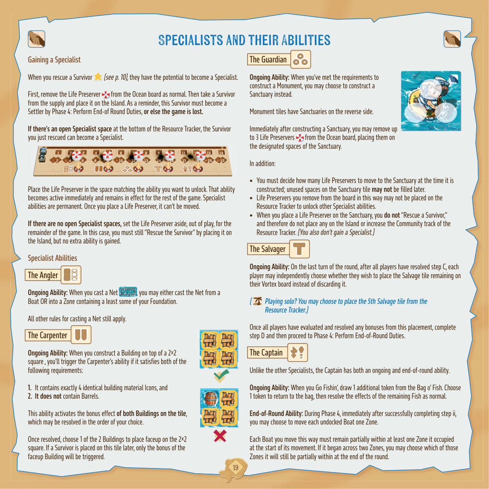
渔夫
持续能力：撒网时，你可以从一艘船上撒，或者撒进一个包含你部分地基的区域。撒网的其他规则全部照旧。
木匠
持续能力：当你在一个 2×2 上盖建筑时，如果同时满足以下两点，就触发木匠的能力：
- 这块 2×2 里恰好有 4 个完全相同的建材图标；
- 里面不含木桶。
此时板块两面的两栋建筑的奖励效果都会触发，顺序由你决定。结算完之后，从两栋建筑里选 1 栋正面朝上放在这个 2×2 上。日后若把幸存者放到这块板块上，只触发朝上那栋建筑的效果。
打捞者
持续能力：在本轮最后一个回合、所有人结算完 C 步之后，每位玩家可以各自决定是否把漩涡板上剩下的那块打捞板块放下去，而不是弃掉。
（单人游玩时，你可以选择放下资源记录板上的第 5 块打捞板块。）
所有人都评估并结算完这次放置带来的奖励后，完成 D 步，再进入阶段四。
与其他专才不同，打捞者同时拥有持续能力和回合末能力。
船长
持续能力：出海捕鱼时，从鱼袋多抽 1 个标记；选 1 个放回袋里，其余鱼照常结算效果。
回合末能力：阶段四里，成功完成 ii 步之后立刻，你可以选择把每一艘未靠泊的船移动一个区域。每艘这样移动的船，移动结束时必须仍有一部分留在它移动开始时所在的至少一个区域内。若它开始时横跨两个区域，由你选择结束时仍留在哪一个区域内。
守护者
持续能力：当你满足建造纪念碑的条件时，可以选择改建圣所。纪念碑板块的背面就是圣所。
建成圣所后立刻，你可以从海域板上取走至多 3 个救生圈，放到圣所上指定的格子里。另外：
- 建成的当下就要决定移几个救生圈过去；圣所上没用到的空格，之后不能再补。
- 以这种方式取走的救生圈，不能再放到资源记录板上解锁其他专才能力。
- 把救生圈放到圣所上不算「救起幸存者」，因此不往岛上放幸存者，也不升社群轨道（同样拿不到专才）。
14三种模式的差异速查
| 环节 | 竞争模式 | 合作／单人模式 |
|---|---|---|
| 目标 | 最高分获胜 | 庇护并养活社群、达成聚落目标、扛住预报 |
| 海域板 | 每人各自一块 | 4 块拼成一整片，中央是岛 |
| 判定预报 | 每人选 1 张传邻居（第 1、3 轮逆时针，第 2、4 轮顺时针），同时翻开 | 管家抽顶牌翻开，所有人找同一张 |
| 幸存者存放 | 速查卡旁 | 岛屿上；可能成为专才 |
| 开局地基 | 只有设置时放的 1 块打捞物 | 岛屿 ＋ 设置时放的全部打捞物 |
| 聚落目标 | 洗混抽 2 张 | 按 A／B 两组各抽 1 张 |
| 建筑 | 给分（右上角数字） | 只给效果，不给分 |
| 太阳能板 | 按相邻可见海域格计分 | 决定能下水几艘船 |
| 渔网 | 按鱼的分值计分 | 把鱼加进鱼轨道 |
| 园圃 | 按相邻建筑／纪念碑计分 | 喂定居者，且永不消耗 |
| 围合到的鱼 | 终局每条 1 VP | 立刻按数量升鱼轨道 |
| 回合末职责 | i 面对预报 → iii 重置漩涡 | i → ii 生存检查 → iii |
| 预报失败的后果 | 终局扣 VP | 立即 Game Over，全员失败 |
| 胜负判定 | 分数最高；平局按四条比较 | 两张聚落目标是否都达成 |
A中英术语对照
| English | 中文 | 说明 |
|---|---|---|
| Salvage | 打捞物 | T 形板块，地基主材 |
| Scrap | 废料 | 1×2 板块，恒为 1 建材＋1 塑料 |
| Vortex | 漩涡 | 板块来源，也是传递的载体 |
| Ocean board | 海域板 | |
| Zone | 区域 | 板上 4×4 的方块区 |
| Settlement | 聚落 | |
| Foundation | 地基 | 不算救生圈、未靠泊的船、渔网、半沉桶 |
| Survivor / Settler | 幸存者／定居者 | 放到建筑上即转为定居者 |
| Steward | 管家 | 合作／单人模式的记录人 |
| Life Preserver | 救生圈 | 取走即救人 |
| Barrel | 木桶 | 半沉／满桶；满桶为万能建材 |
| Docked / Undocked | 已靠泊／未靠泊 | 靠泊后船算地基 |
| Net / Garden | 渔网／园圃 | 同一块板块的两面 |
| Monument / Sanctuary | 纪念碑／圣所 | 同一块板块的两面 |
| Forecast | 预报 | 每轮的天气事件与目标 |
| Incoming Survivors | 来援幸存者 | 难度卡 |
| Holdfast Connector | 固着连接板 | 合作模式拼出中央岛屿 |
| Enclosed ocean segment | 被围合的海域 | 边界与板边不算封闭 |
B制作名单
设计：Gilles Turbide｜美术：Amelia Sales｜合作与单人模式设计／开发：Conor McGoey｜主开发：Carter Morash｜编辑：Daniel Mansfield｜文案：Jenna Muir｜IUG 团队：Brandon Nall、Tylor Murray、Chris Walters｜平面设计：Katie Hoang、David Shaw、Riley Lem｜额外平面设计：Kenneth Spond（Studio MIDNO）
©2026 Inside Up Games，201-244 Camelot St, Thunder Bay, ON P7A 4B1, Canada